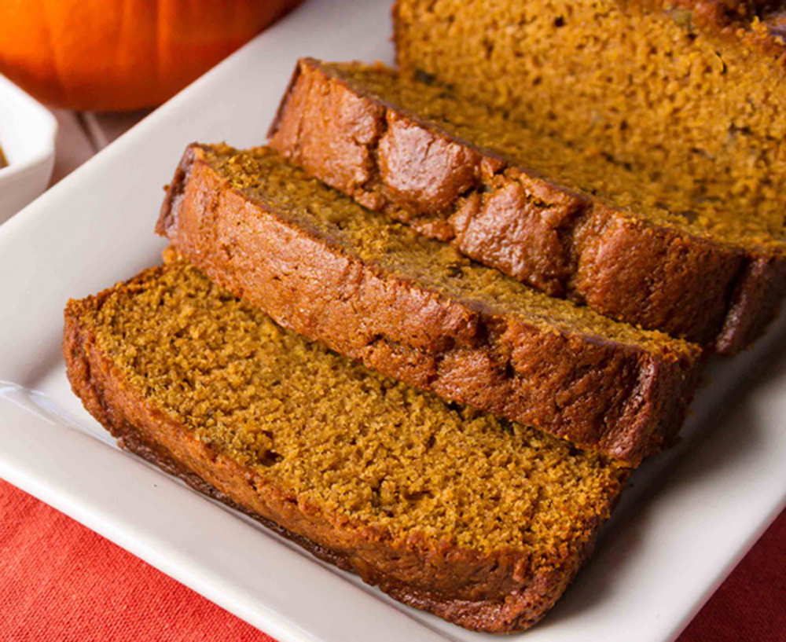

Pumpkin Bread

Description
This fall favorite Homemade Pumpkin Bread recipe has been a fan favorite since 2014. No mixer required! Packed with cinnamon spice and loads of pumpkin flavor, the days of bland pumpkin pies are behind us.
Ingredients
- 1 and 3/4 cups all-purpose flour
- 1 teaspoon baking soda
- 2 teaspoons ground cinnamon
- 1/4 teaspoon ground nutmeg
- 1/4 teaspoon ground cloves
- 1/4 teaspoon ground ginger
- 3/4 teaspoon salt
- 2 large eggs, at room temperature
- 1/2 cup granulated sugar
- 3/4 cup packed light or dark brown sugar
- 1 and 1/2 cups pumpkin puree (canned or fresh)
- 1/2 cup vegetable oil (canola oil, or melted coconut oil)
- 1/4 cup orange juice
- 2/3 cup semi-sweet chocolate chips